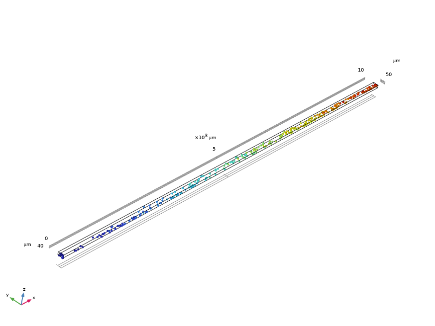
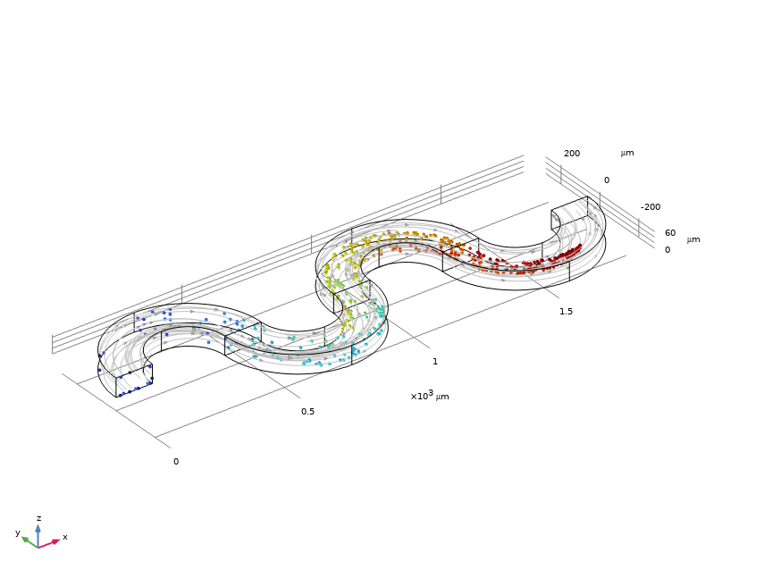
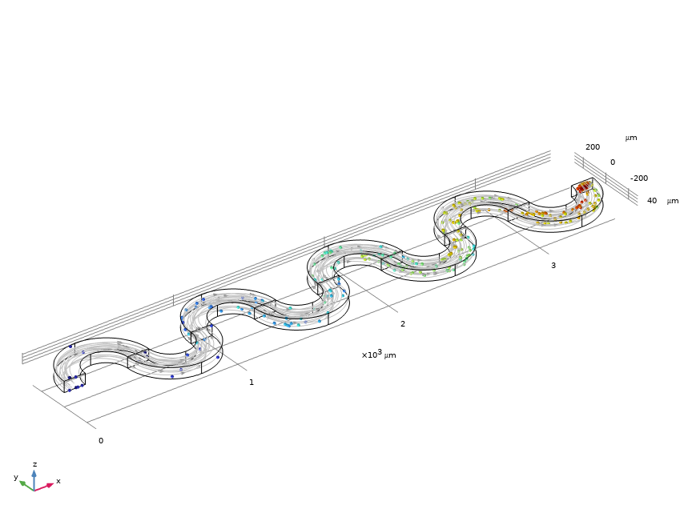
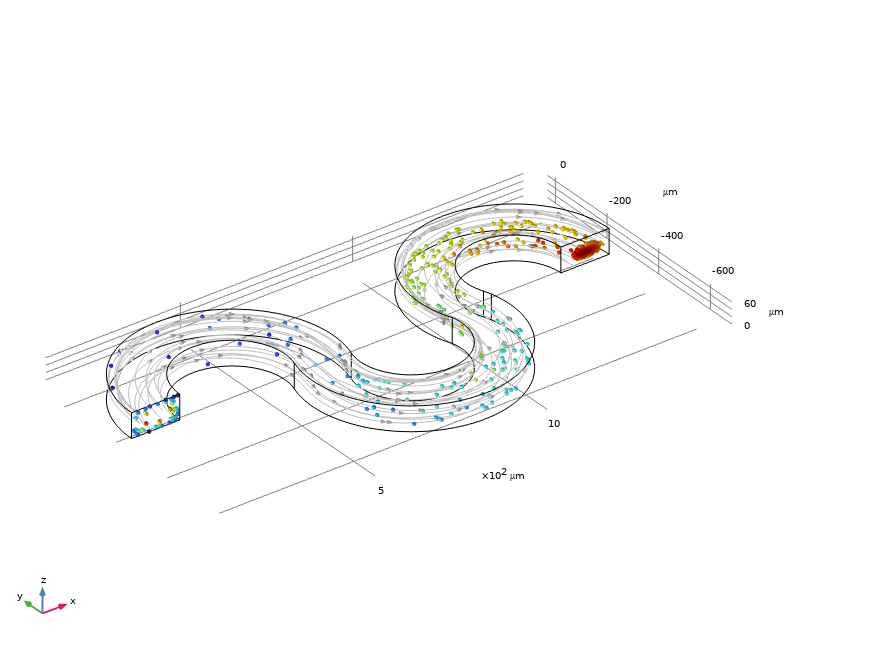
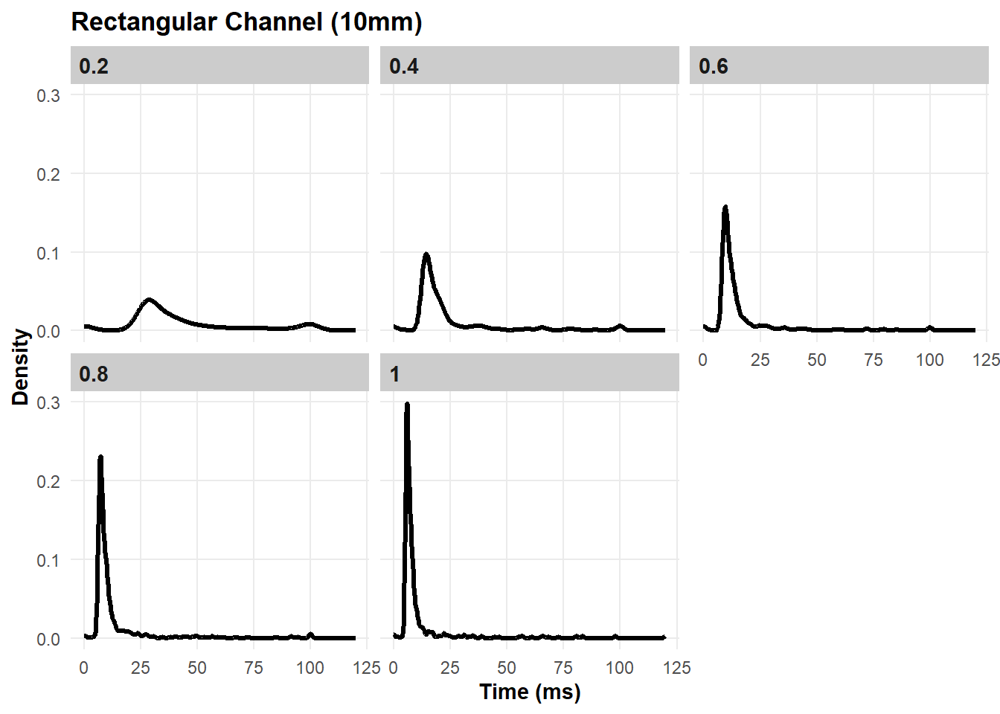
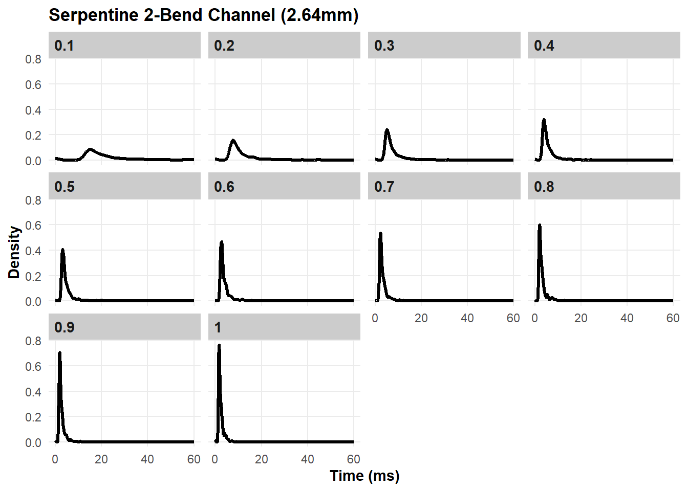
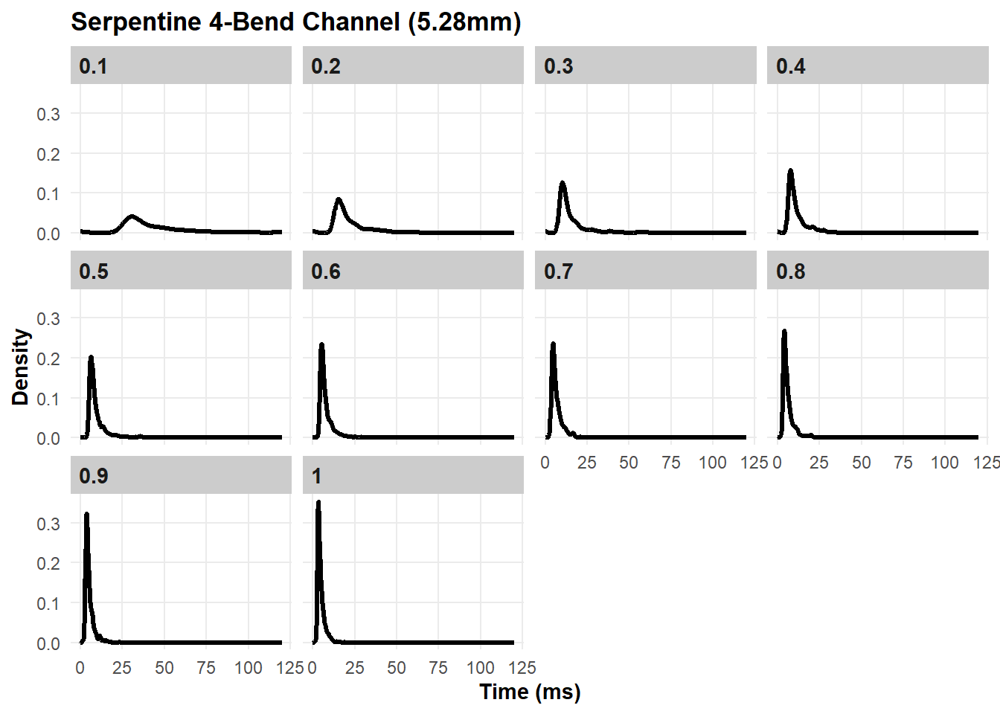
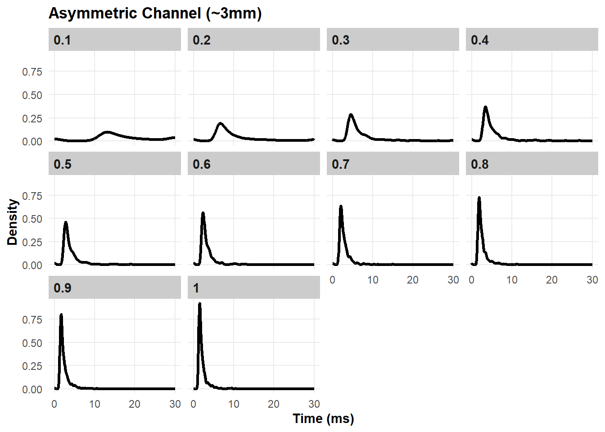

Serpentine channel with two bends (Figure 2): Radius of 280 µm
Serpetine channel with four bends (Figure 3): Radius of 280 µm
Asymmetric serpentine channel (Figure 4): Approximately 3 mm centreline length (I haven’t figured out how to measure it!)
All the channels had a rectangular cross section with 2:1 aspect ratio.
Following solving of the stationary solution, 500 particles of 5 nm diameter were released at the velocities in Table 1.
The particle counter was the outlet at the end of the channel.
t_particle is an auxiliary variable used in particle tracing simulations. It represents the time a particle has spent in the simulation domain since its release.
Centreline length per S-curve: 2 × 659.73 = 1319.47 μm
Retangular

Figure 1: Rectangular Channel 10 mm
Serpentine 2-bend

Figure 2: Serpentine Channel with two bends
Serpentine 4-bend

Figure 3: Serpentine Channel with four bends
Asymmetric

Figure 4: Asymmetric Channel
Results
As mentioned in t_particle is an auxiliary variable used in particle tracing simulations. It represents the time a particle has spent in the simulation domain since its release. Hence I exported the t_particle data for each velocity for each channel and then plotted their distributions ( Figure 1, Figure 6, Figure 7, Figure 8 ).
As plots all show skewed distributions, I think the geometric mean residence time and log-normal coefficient of variation are the appropriate statistics, but I calculated the arithmetic mean and sample standard deviation CV too just in case I’m wrong (Table 2, Table 3, Table 4, Table 5).
Particle residence time distributions
df.r |>ggplot(aes(x = time_ms)) +geom_density(linewidth =1.2) +facet_wrap(~velocity) +labs(x ="Time (ms)", y ="Density", title ="Rectangular Channel (10mm)") +theme_clean()

Figure 5: Rectangular Channel (10mm) Particle residence time distribution
df.2|>ggplot(aes(x = time_ms)) +geom_density(linewidth =1.2) +facet_wrap(~velocity) +labs(x ="Time (ms)", y ="Density", title ="Serpentine 2-Bend Channel (2.64mm)") +theme_clean()

Figure 6: Serpentine 2-Bend Channel (2.64mm) Particle residence time distribution
df.4|>ggplot(aes(x = time_ms)) +geom_density(linewidth =1.2) +facet_wrap(~velocity) +labs(x ="Time (ms)", y ="Density", title ="Serpentine 4-Bend Channel (5.28mm)") +theme_clean()

Figure 7: Serpentine 2-Bend Channel (5.28mm) Particle residence time distribution
df.a |>ggplot(aes(x = time_ms)) +geom_density(linewidth =1.2) +facet_wrap(~velocity) +labs(x ="Time (ms)", y ="Density", title ="Asymmetric Channel (~3mm)") +theme_clean()

Figure 8: Asymmetric Channel (~3mm) Particle residence time distribution
Particle residence time statistics
df.r.stats <-flow_stats(df.r)df.r.stats |>mutate(across(c( arithmetic_mean_time, sd_time, geometric_mean_time, median_time, cv, cv_log ), ~round(., 2)),# Keep velocity as is since it may be an identifiervelocity =round(velocity, 1),sd_log_time =round(sd_log_time, 4) ) |>kbl(col.names =c("Velocity (m/s)", "Mean Res. Time (ms)", "SD Res.Time", "Geometric Mean Res.Time (ms)","Median Res. Time (ms)", "CV (%)", "SD Log Time", "CV Log (%)" ),align =rep("c", ncol(df.r.stats)) ) |>kable_styling(bootstrap_options =c("striped", "hover"),full_width =FALSE )